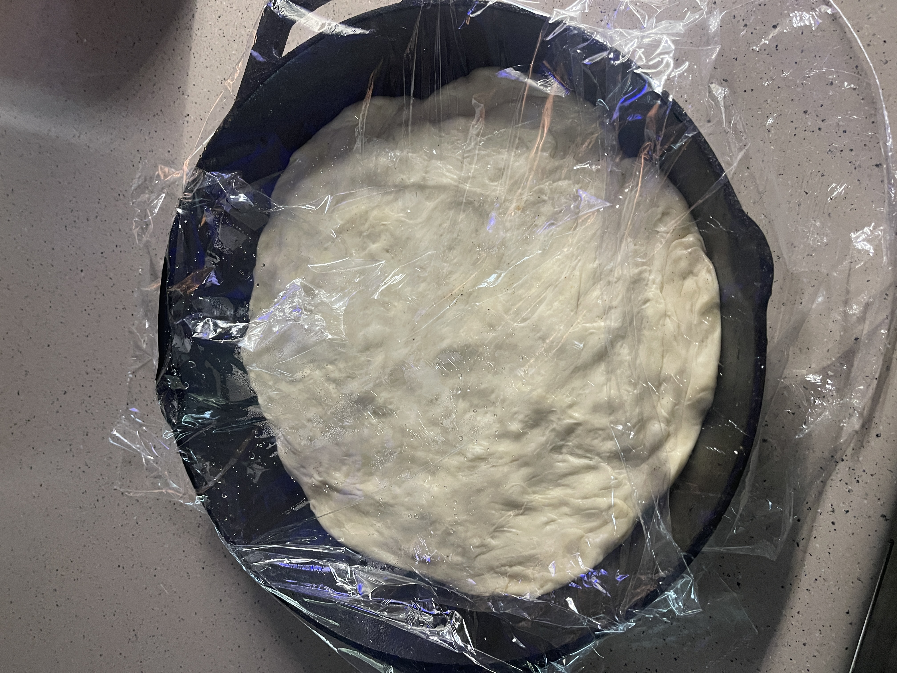

Pizza Dough

Description:
This homemade pizza dough recipe is fun and easy!Don't be intimidated if you
have never worked with dough before - this recipe is easy to follow and can be prepared
using only adollar or so worth of ingredients. If it doesn't turn out right the first time,
you will have lost a bit of time and food, but you will have gained experience on your baking journey!
Tools Required:
- A medium to large bowl
- A spatula
- Plastic wrap, if your bowl doesn't have a lid
- Refrigerator
- Pan for baking (I use my trusty 10" cast-iron, but the pan you use will depend on the type of pizza you want to make!)
ingredients:
- 2 Cups Bread Flour (all purpose flour will work too!)
- 3/4 tsp salt
- 1/2 tsp instant yeast or active dry yeast
- 3/4 cup warm water
- 1 tbsp olive oil
Instructions:
- Place the flour, salt, yeast, water and olive oil in a medium - large mixing bowl.
- Stir all ingredients together with your spatula until it is a sticky mass of dough with no dry patches of flour.
This should take about one minute. Scrape down the sides of the bowl to gather the dough into a rough ball;
cover the bowl for 5 minutes
- After 5 minutes, uncover the bowl and wet your hands. Using your wet hands, reach below the dough ball and stretch
the bottom of the dough over it's top. Don't overthink the technique here, just go for it! Repeat
this process three more times, turning the bowl 90° each time. Once you have stretched the dough four times
(this is called a "fold") re-cover the bowl for 5 more minutes.
- Repeat the folding process three more times, with 5 minutes between each fold. Once the dough has been folded
four times, cover the bowl and let the dough rest for 40 minutes. Then refrigerate for a minium of 12 hours,
or up to 72 hours.
- Pour about 11/2 tbsp of olive oil into the pan you will use to bake your pizza. Spread the
oil around with your fingers or a paper towel. Make sure the sides are fully oiled.
- Transfer your dough to the pan and turn it once to coat both sides in oil. Press the dough to the edges of the pan,
using your fingers to dimple it in the process. The dough may start to shrink back; that's no problem, just cover it and let
it rest for about 15 minutes, then repeat the process as necessary. Once the dough reaches the edge of the pan, cover
and let it rise for two hours at room temperature.
- You are now ready to top your pizza! That will not be covered in this recipe, but I recommend getting creative with it!
If you don't know what to make, red sauce and cheese is always a classic!
- When your pizza is topped and ready, bake it for 18 to 20 minutes at 450° on the bottom rack. Check the bottom of the crust using
a spatula; when it's golden brown on the bottom, and the toppings look ready, take it out and let cool for a few minutes.
- Cut, serve and enjoy!